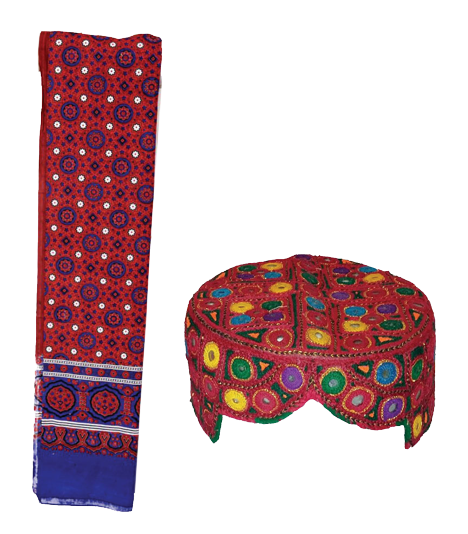
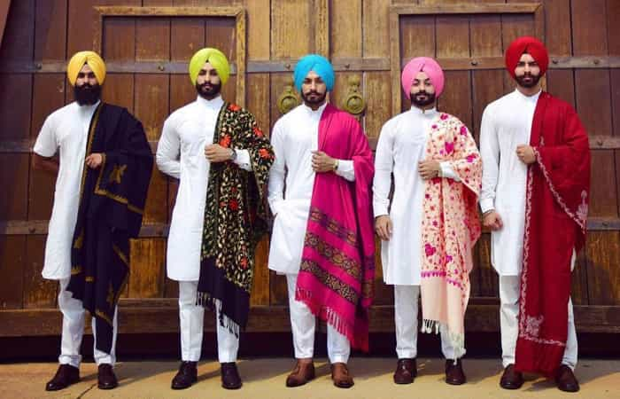

History Of Four Province
- Sindh
- Sindh is one of the four provinces in Pakistan located at the Southern border. The province of Sindh has been named after the famous River Indus. In Sanskrit, the province was dubbed Sindhu meaning an ocean. Around 3000 B.C, Dravidian cultures urbanized and gave rise to the Indus Valley Civilization. According to the Historians, Indus Valley Civilization declined due to the natural disasters such as floods but the invasions of Indo- Arians caused the sudden collapse of it. In the recent history, Sindh was conquered by the British in 1843. Sindh province remained the part of British India until 1947 when it was made one of the provinces of Pakistan.

Sindhi language is an ancient language spoken in Pakistan and many other parts of the world. It is an Indo-Aryan language spoken by approximately 41 million people in Pakistan, and 12 million people in India; it is the second most spoken language of Pakistan, mostly spoken in the Sindh province. It is a recognized official language in Pakistan, and also an official language in India. Government of Pakistan issues National Identity Cards to its citizens only in two languages; Sindhi and Urdu.
Sindhi language is also greatly influenced by Sanskrit and about 70% of the words in Sindhi are of Sanskrit origin. Sindhi is a very rich language with a vast vocabulary; this has made it a favorite of many writers and so a lot of literature and poetry has been written in Sindhi. It has been the inspiration for Sindhi art, music, literature, culture and the way of life. The language can be written using the Devanagri or Arabic script
- Punjab
- Punjab (the land of five rivers) is the biggest land area of Pakistan and is popularly known for its culture. It shares most of its cultural and carnival values with Indian culture. According to population, 56% of the total population of the country is situated in Punjab Province. It has a total of 36 districts and contributes approximately 50-60 % of the economy.
Punjabi Culture is one of the oldest in world history, dating from ancient antiquity to the modern era. The scope, history, complexity and density of the culture are vast. Some of the main areas of the Punjabi culture include: Punjabi cuisine, philosophy, poetry, artistry, music, architecture, traditions and values and history. Some cities of Punjab have more importance for Sikh community from India. The founder of Sikh religion was born in Nankana Sahib, a district of Punjab so Sikh from different parts of world come and visits Punjab. Jahngir tomb and Badshahi Masjid in Lahore are the important places of Pakistan. Data Sahib is very scared place in Punjab and most of the people come and visit Data sahib every year.

In villages’ people usually live in small communities (biradaris), however they live in peace and harmony with each other. They take active part in the happiness/grieve of each other and give a great deal of respect to their culture, norms and run their lives according to their set traditions. Punjabi people are famous for their hospitable and loving nature.
- Pothowari
- Hindko
- Jhangvi
- Shahpuri
- Pahari
- Majhi
- Saraiki
The costumes are a mix of colours, comfort and beauty and Punjab is well known for the use of phulkari(embroidery) in its costumes. In most of the villages of Punjab men wear Pagri(turban), dhoti/lacha, kurta, khusa. Women wear gharara, or choridar pajama or colorful shalwar kameez, paranda, choli/duppata, khusa, kola puri chappal or tillay wali jutti. Whereas in urban areas of Punjab men and women follow latest trends and fashion, generally they wear different styles of shalwar kameez.
- Khyber Pakhtunkhwa (KPK)
- Khyber Pakhtunkhwa (KPK), also known as the North-West Frontier Province (NWFP), is a province located in the northwestern region of Pakistan. It is home to various ethnic groups, with the Pashtuns being the dominant community. The culture of KPK is deeply influenced by Pashtun traditions, customs, and way of life. Here are some key aspects of KPK culture:
- Language:
- Pashto Language: The majority of people in KPK speak Pashto, which is the provincial language. It is also known as Pakhto or Pushto. Pashto poetry and literature are an important part of the cultural heritage.
- Pashtunwali
- Pashtunwali is the traditional code of conduct followed by the Pashtun people, and it plays a significant role in shaping the culture of KPK. It encompasses concepts such as hospitality, justice, bravery, loyalty, and honor.
- Traditional Attire:
- PTraditional Attire: The traditional dress for men in KPK is the shalwar kameez, consisting of loose-fitting trousers (shalwar) and a long tunic (kameez). The traditional attire for women includes the long flowing dress called the frock or the loose trousers and tunic known as the perahan tunban.
- Music and Dance:
- Music and Dance: Pashto music is an integral part of KPK culture. The traditional music is characterized by the use of instruments such as the rubab (a stringed instrument), harmonium, tabla (drums), and sitar. The Attan is a popular traditional dance performed by both men and women.
- Food:
- Food: The cuisine of KPK is known for its rich and flavorful dishes. Some popular Pashtun dishes include chapli kebab (spiced meat patties), karahi (a spicy meat curry), tikkas (grilled meat skewers), and various rice dishes like pulao and kabuli palaw.
- Festivals:
- Festivals: Pashtuns celebrate various cultural festivals throughout the year. One of the most significant festivals is Eid-ul-Fitr, which marks the end of Ramadan. Other festivals include Eid-ul-Adha (Festival of Sacrifice) and Jashn-e-Nowruz (New Year's celebration).
- Festivals:
- Festivals: Pashtuns celebrate various cultural festivals throughout the year. One of the most significant festivals is Eid-ul-Fitr, which marks the end of Ramadan. Other festivals include Eid-ul-Adha (Festival of Sacrifice) and Jashn-e-Nowruz (New Year's celebration).
- Sports:
- Sports: Traditional sports such as Kushti (wrestling), Buzkashi (horse polo), and Gatka (stick-fighting) are popular in KPK. Cricket is also widely followed and played throughout the province.
- Arts and Crafts:
- Arts and Crafts: KPK is known for its intricate handwoven carpets, embroidery, pottery, and woodwork. The craftspeople of the region produce beautiful handicrafts that reflect the local culture and traditions.
- Religion:
- Religion: The majority of people in KPK practice Islam, with Sunni Islam being the dominant sect. Mosques play a central role in the community, and Islamic customs and traditions are observed.
- Tribal Structure:
- Tribal Structure: The tribal system has historically played a significant role in the culture and governance of KPK. Pashtun tribes have their own social structure, customs, and tribal codes.

- Balochistan
- Balochistan, also known as Baluchistan, is a region located in South Asia, spanning across parts of Iran, Pakistan, and Afghanistan. It is home to the Baloch people, who have a distinct culture and heritage. The Balochistan region has a rich and diverse cultural heritage that has evolved over centuries. Here are some key aspects of Balochistan's culture:
- Language:
- The Balochi language is spoken by the Baloch people. It belongs to the Northwestern Iranian branch of the Indo-Iranian language family. It has several dialects, but the two main ones are Eastern Balochi and Western Balochi.
- Traditional Dress:
- The traditional dress of Baloch men consists of a long loose shirt known as "Shalwar Kameez" paired with a loose, baggy trouser called "Suthan." They often wear a turban or a traditional cap called "Tupi." Baloch women traditionally wear colorful, embroidered dresses and cover their heads with a veil known as "Chadar."
- Music and Dance:
- Balochi music is an integral part of the culture. Traditional Balochi music is characterized by the use of instruments like the "Soroz" (a traditional flute), "Benju" (a traditional string instrument), and "Dhol" (a drum). Folk dances, such as "Hambo," "Dochaap," and "Leva" are popular during weddings and other festive occasions.
- Nomadic Lifestyle
- Historically, many Baloch people led a nomadic lifestyle, moving with their herds across the arid plains and mountains of Balochistan. This nomadic heritage still influences the culture, especially in rural areas, where traditional practices and customs are upheld.
- Hospitality:
- Baloch people are known for their warm hospitality. Guests are treated with great respect and are offered traditional Balochi hospitality, which often includes serving special dishes and tea.
- Crafts and Artwork:
- Balochistan is known for its traditional crafts and artwork. Baloch artisans are skilled in intricate woodwork, carpet weaving, pottery, and the making of traditional jewelry, including silverwork and beadwork.
- Tribal Structure:
- Baloch society has traditionally been organized into tribes, and tribal customs and traditions play a significant role in daily life. The tribal system influences social relationships, decision-making processes, and conflict resolution within the community.
- Cuisine:
- Balochi cuisine is known for its rich and flavorful dishes. Some popular Balochi dishes include "Sajji" (roasted lamb or chicken), "Rosh" (a meat stew), "Lung" (a traditional Balochi kebab), and various types of bread, including "Tandoori Roti" and "Roghani Naan."